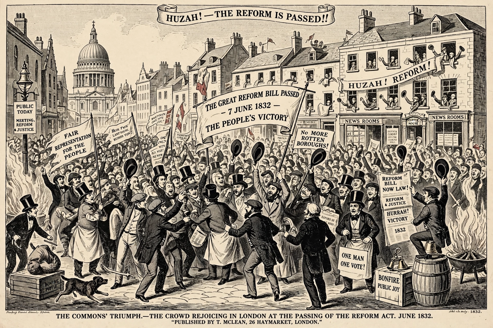

| Representation of the People Act 1832 | |
|---|---|
| Citation | 2 & 3 Will. 4. c. 45 |
| Royal assent | 7 June 1832 |
| Introduced by | Lord John Russell; government of Earl Grey |
| Territory | England and Wales |
| Status | Repealed (superseded by later reforms) |

The Representation of the People Act 1832 (2 & 3 Will. 4. c. 45), commonly known as the Reform Act 1832, the Great Reform Act, or the First Reform Act, was an Act of the Parliament of the United Kingdom that introduced major changes to the electoral system of England and Wales. It was designed to correct the abuses of the unreformed system — in particular the existence of "rotten boroughs" — and to give representation to the new industrial towns of the Industrial Revolution.
Before 1832, representation in the House of Commons bore little relation to population. Tiny boroughs such as Old Sarum, with seven voters, returned two MPs, while great cities such as Manchester and Birmingham returned none directly. Seats were often controlled by wealthy patrons ("pocket boroughs"). Agitation for reform had grown since the late eighteenth century, intensified by the Peterloo Massacre of 1819 and political unions such as the Birmingham Political Union.
The Whig government of Earl Grey, with Lord John Russell introducing the bills, brought forward reform legislation in 1831. The bill passed the Commons but was rejected by the House of Lords, provoking riots in Bristol, Nottingham and elsewhere. After the "Days of May" crisis in 1832 — when Grey resigned, the Duke of Wellington failed to form a government, and William IV agreed to create enough new peers to swamp opposition — the Lords yielded and the Act received royal assent on 7 June 1832.
The Act disfranchised 56 rotten boroughs entirely and reduced the representation of 31 others, redistributing 143 seats to counties and new boroughs including Manchester, Birmingham, Leeds and Sheffield. In the boroughs it standardised the franchise on male householders occupying property worth £10 or more per year; in the counties it extended the 40-shilling freehold qualification to copyholders and certain leaseholders. The electorate in England and Wales rose from about 400,000 to roughly 650,000 — about one in five adult males. Companion acts covered Scotland and Ireland.
Though limited — the working class remained largely excluded, prompting the rise of Chartism — the Act established the principle that the electoral system could be reformed and paved the way for the further Reform Acts of 1867 and 1884. It also required the creation of electoral registers and began the modern party-organised system of voter registration.